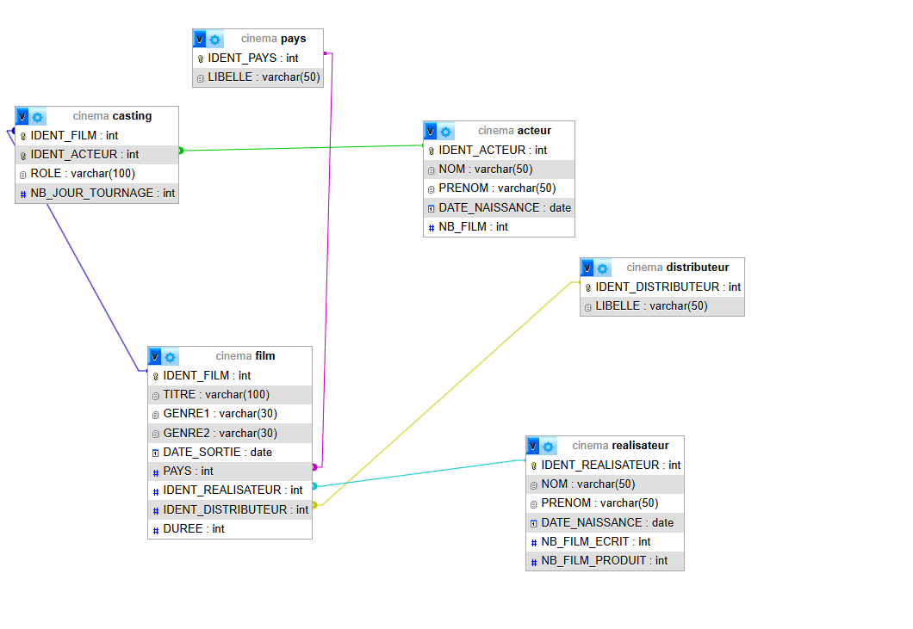
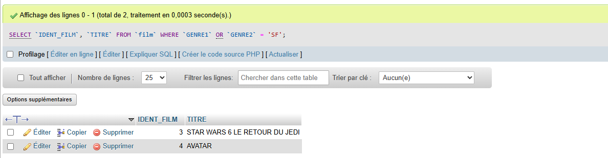
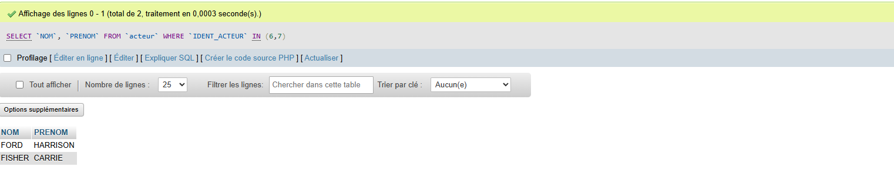
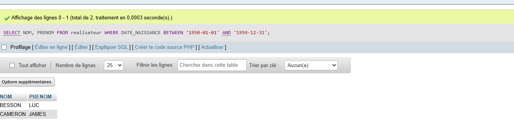

L'entreprise UGC a besoin d'une base de données simple pour son site web. Je crée l'ébauche pour le service marketing.
Voici l'organisation des 6 tables (Acteur, Film, Réalisateur, etc.) et comment elles sont liées.
J'ai utilisé le langage SQL pour créer les tables et y mettre les données.
On crée la base
CREATE DATABASE cinema;
On crée la table Pays
CREATE TABLE pays (IDENT_PAYS INT PRIMARY KEY, LIBELLE VARCHAR(50));
On ajoute la liaison (Clé Étrangère) entre Film et Pays
ALTER TABLE film ADD CONSTRAINT fk_film_pays FOREIGN KEY (PAYS) REFERENCES pays(IDENT_PAYS);
On met les pays
INSERT INTO pays (IDENT_PAYS, LIBELLE) VALUES (1, 'FRANCE');
On met un film
INSERT INTO film (IDENT_FILM, TITRE, ...) VALUES (1, 'SUBWAY', ...);
- Afficher la liste des film (ID et Titre) qui ont un genre SF.
- Afficher la liste des réalisateurs (Nom, Prénom) qui sont nés dans les années 50
- Afficher le nom et le prénom des acteurs qui ont joué dans un film réalisé par « Georges Lucas ».
Voici une version PDF des requetes SQL
Cinema. PDF